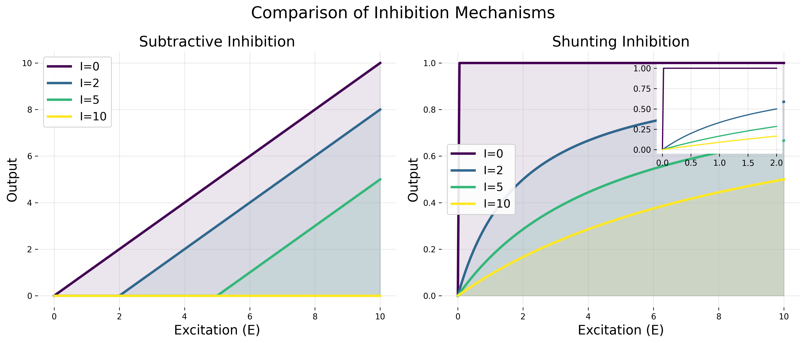
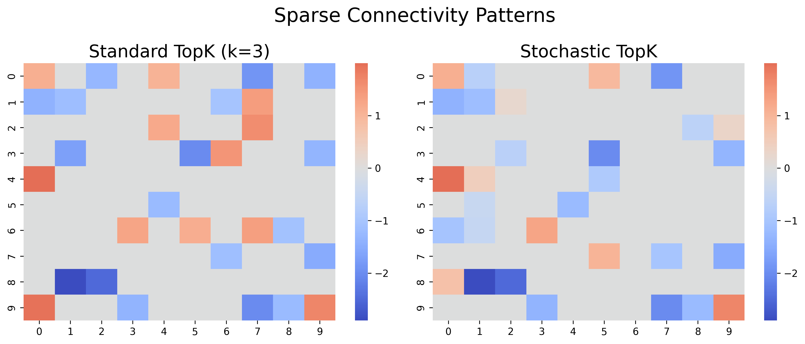
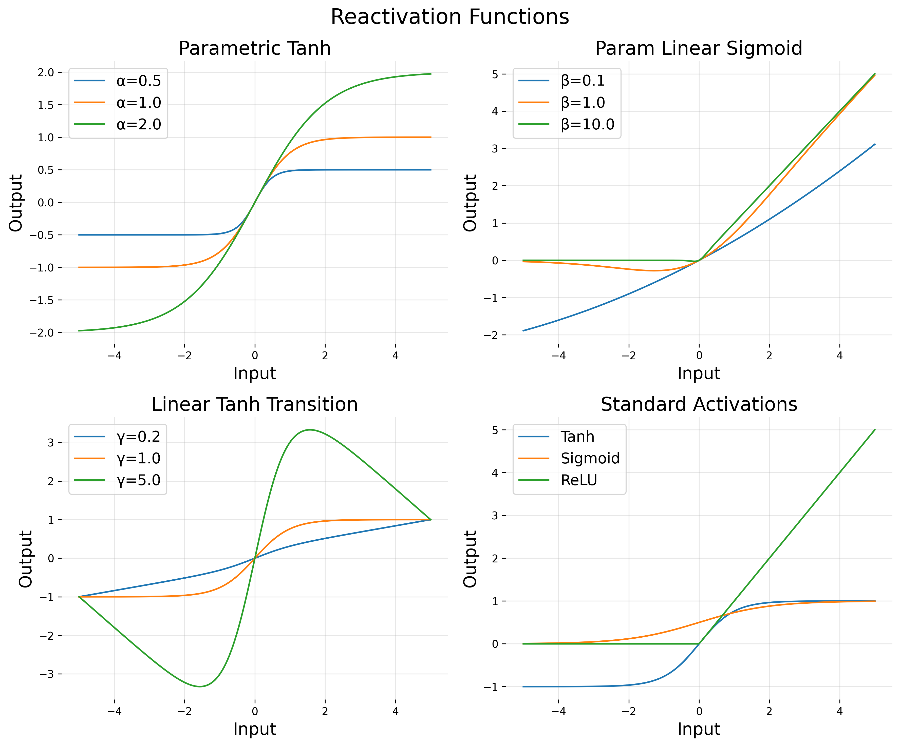
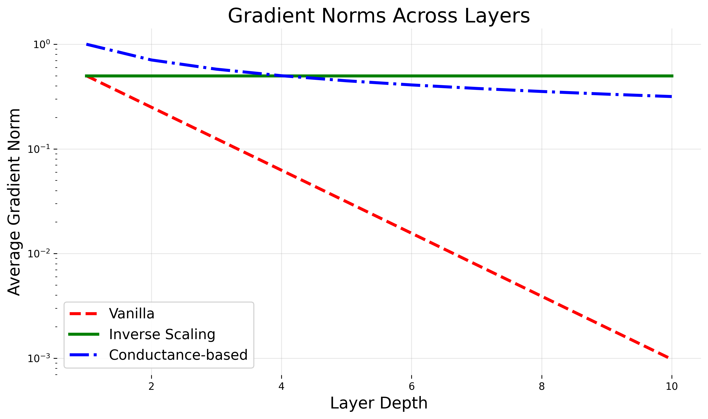

Core Concepts#
This section introduces the fundamental computational and biological principles underlying the Dendritic Modeling Framework. Understanding these concepts is essential for effectively using the framework and interpreting results.


Figure 2 Shunting Inhibition: The core computational mechanism implementing divisive normalization through E/(E+I+ε), providing gain control and dynamic range adaptation.#
Dendritic Computation#
Biological Foundation#
Real neurons are far more sophisticated than the simple summation units used in traditional artificial neural networks. Biological neurons feature elaborate dendritic trees that perform complex, nonlinear computations:
Traditional Artificial Neuron:
Biological Dendritic Neuron:
Spatial organization: Synapses distributed across dendritic branches
Local processing: Each branch performs independent computations
Nonlinear integration: Active dendritic properties enable complex operations
Hierarchical structure: Multi-level branching creates computational hierarchy
Shunting Inhibition#
The cornerstone of dendritic computation in our framework is shunting inhibition—a divisive form of inhibition found throughout the nervous system:
Where: - \(E\) = sum of excitatory inputs - \(I\) = sum of inhibitory inputs - \(\varepsilon\) = small constant (prevents division by zero)
Key Properties:
Gain Control: Response amplitude scales with total input strength
Normalization: Output bounded in range [0, 1] regardless of input magnitude
Contrast Enhancement: Amplifies differences between inputs
Dynamic Range: Adapts to varying input statistics
Comparison with Subtractive Inhibition:
Property |
Shunting (E/(E+I+ε)) |
Subtractive (E-I) |
|---|---|---|
Output Range |
Bounded [0,1] |
Unbounded |
Gain Control |
Yes (automatic) |
No |
Biological Realism |
High |
Lower |
Computational Cost |
Slightly higher |
Lower |
Dendritic Branch Processing#
In our framework, dendritic branches implement hierarchical computation:
# Example: 3-level dendritic tree
branch_factors = [4, 2] # 4 → 2 → 1 branches
# Level 1: 4 distal branches receive raw inputs
# Level 2: 2 intermediate branches integrate level 1 outputs
# Level 3: 1 proximal branch (soma) integrates level 2 outputs
Each level can apply: - Sparse connectivity (TopK selection) - Nonlinear reactivation (parametric functions) - E/I integration (shunting inhibition)
Excitation-Inhibition (E/I) Dynamics#
Dale’s Principle#
Following Dale’s principle, neurons in biological networks are either purely excitatory or purely inhibitory:
Excitatory neurons (E-cells): Make only excitatory connections
Inhibitory neurons (I-cells): Make only inhibitory connections
No mixed neurons: Each cell has a single neurotransmitter type
Network Organization#
Our E/I networks implement realistic connectivity patterns:
Connection |
Description |
Function |
|---|---|---|
E→E |
Excitatory to Excitatory |
Forward signal propagation |
E→I |
Excitatory to Inhibitory |
Drives inhibitory responses |
I→E |
Inhibitory to Excitatory |
Provides feedback inhibition |
I→I |
Inhibitory to Inhibitory |
Inhibitory control (optional) |
Layer Architecture:
# Example E/I network configuration
excitatory_layer_sizes: [256, 128, 64] # E-cell counts per layer
inhibitory_layer_sizes: [64, 32, 16] # I-cell counts per layer
# Connectivity patterns
ee_synapses_per_branch: [100, 50] # E→E connections
ei_synapses_per_branch: [50, 25] # E→I connections
ie_synapses_per_branch: [25, 10] # I→E connections
E/I Balance Dynamics#
The balance between excitation and inhibition creates rich dynamics:
Balanced State (E ≈ I): - Sparse, irregular firing - High sensitivity to inputs - Efficient information transmission
Excitation-Dominated (E >> I): - High activity, potential runaway - Reduced selectivity - Higher energy consumption
Inhibition-Dominated (E << I): - Suppressed activity - Reduced responsiveness - Information loss
Sparse Connectivity#
Biological Motivation#
Real neural circuits exhibit highly sparse connectivity: - Cortical neurons: Connect to ~1% of possible targets - Efficiency: Reduces metabolic cost and wiring volume - Specialization: Enables selective information processing
TopK Selection Mechanisms#
Our framework implements several sparse connectivity strategies:


Figure 3 Sparse Connectivity Patterns: Comparison of deterministic (left) and stochastic (right) TopK selection methods showing different sparsity patterns.#
Standard TopK#
Deterministic selection of k strongest connections:
# Select top 10% of connections by weight magnitude
topk_type: "standard"
synapses_per_branch: 100 # Out of 1000 possible
Advantages: - Predictable behavior - Fast computation - Stable training
Use cases: - Initial experiments - Baseline comparisons
Stochastic TopK#
Probabilistic selection based on weight ranking:
topk_type: "stochastic"
topk_temperature: 0.3 # Lower = more deterministic
topk_ultrafast: true # Enable optimized implementation
Advantages: - Exploration during training - Robustness to local minima - Biological realism
Use cases: - Large models requiring exploration - Noisy environments
Variance-Based Selection#
Selection based on input variance patterns:
topk_type: "variance"
variance_window: 100 # Samples for variance estimation
Advantages: - Adapts to input statistics - Emphasizes informative connections - Self-organizing behavior
Dynamic Sparse Training (DeepST)#
Evolving connectivity with Brownian motion:
topk_type: "deepst"
target_density: 0.1 # Maintain 10% connectivity
rewiring_mode: "global" # Rewiring strategy
rewire_frequency: 5 # Every 5 training steps
use_noise: true # Brownian motion exploration
sigma: 0.05 # Noise magnitude
Advantages: - Continuously evolving connectivity - Discovers optimal wiring patterns - Prevents connectivity stagnation
Use cases: - Long training runs - Complex, changing environments
Reactivation Functions#
Biological Motivation#
Dendritic branches contain voltage-gated ion channels that create nonlinear input-output relationships. Our framework captures this through parametric reactivation functions applied after branch integration.


Figure 4 Reactivation Functions: Comparison of parametric and standard activation functions available for dendritic branch processing, showing how parameters control function shape and behavior.#
Available Functions#
Standard Functions#
reactivation_type: "relu" # Standard ReLU
reactivation_type: "sigmoid" # Standard sigmoid
reactivation_type: "tanh" # Standard tanh
Parametric Functions#
Parametric Tanh:
reactivation_type: "param_tanh"
reactivation_init_m: 1.5 # Initial slope
reactivation_init_b: 0.5 # Initial bias
Linear-Sigmoid Interpolation:
reactivation_type: "param_linear_sigmoid"
reactivation_init_m: 0.7 # Interpolation weight
Transition Functions:
reactivation_type: "param_linear_tanh_transition"
reactivation_init_threshold: 0.5
reactivation_init_slope: 2.0
Branch-Specific Activation#
Different dendritic branches can use different activation functions:
# Example: Proximal vs. distal branch specialization
proximal_branches: "linear" # Simple integration
distal_branches: "param_tanh" # Nonlinear processing
Gradient Scaling Strategies#
Challenge: Vanishing Gradients#
Deep dendritic trees can suffer from vanishing gradients, especially in distal branches. Our framework provides several strategies to address this:


Figure 5 Gradient Scaling Strategies: Comparison of gradient norms across network layers for different scaling approaches, showing how specialized methods prevent vanishing gradients.#
Inverse Scaling#
Compensates for gradient attenuation by distance:
reactivation_strategy: "inverse"
Conductance-Based Scaling#
Biologically-motivated scaling based on synaptic conductance:
topk_strategy: "conductance_dynamic"
blocklinear_strategy: "conductance_dynamic"
Distal Upweighting#
Enhanced learning for distal dendritic branches:
blocklinear_strategy: "distal_upweight_by_idx"
Custom Scaling#
# Implement custom gradient scaling
def custom_gradient_hook(grad):
return grad * scaling_factor
Input Processing Modes#
The framework supports multiple input processing strategies to optimize E/I separation:
Mode 0: Raw Input to E, None to I#
input_mode: 0
Excitatory pathway receives raw input
Inhibitory pathway receives no direct input
I-cells activated only through E→I connections
Use case: Simple architectures, shared inhibition
Mode 1: Independent Pathways#
input_mode: 1
independent_pathways: true
Separate input streams for E and I pathways
Each pathway processes different input features
Layer-specific inhibition
Use case: Complex architectures requiring specialized processing
Mode 2: Input Network Transform#
input_mode: 2
input_net_dict:
type: "CNNInputTransform"
excitatory_hidden_dims: [32, 64]
inhibitory_hidden_dims: [16, 32]
Sophisticated input preprocessing
Separate transformation networks for E and I
Learnable feature extraction
Use case: Complex data requiring preprocessing
Transform Network Types#
Type |
Description |
|---|---|
IndexInputTransform |
Random index-based splitting |
MLPInputTransform |
Multi-layer perceptron transformation |
CNNInputTransform |
Convolutional feature extraction |
AlexNetTransform |
Pre-trained AlexNet features |
Scalability Considerations#
The framework supports scaling from small experiments to large-scale distributed training:
Small Models and Datasets#
Characteristics: - Single GPU training - Standard precision - Simple connectivity patterns
Recommended Settings:
# Small model configuration
use_fsdp: false
enable_amp: false
batch_size: 128
# Simple connectivity
topk_type: "standard"
excitatory_layer_sizes: [64, 32]
Performance Optimizations: - Disable expensive analysis during training - Use efficient_blocklinear: true - Small batch sizes for memory efficiency
Large Models and Datasets#
Characteristics: - Multi-GPU/multi-node training - Billions of parameters - Complex connectivity patterns
Recommended Settings:
# Large model configuration
use_fsdp: true
fsdp_config:
mixed_precision: true
cpu_offload: true
sharding_strategy: "full"
# Advanced connectivity
topk_type: "deepst"
target_density: 0.1
Performance Optimizations: - FSDP for model sharding - Mixed precision training (AMP) - Gradient checkpointing - CPU offloading for memory management
Memory and Compute Scaling#
Model Size |
Memory (GB) |
GPUs |
Techniques |
|---|---|---|---|
Small (<1M params) |
2-4 |
1 |
Standard training |
Medium (1-100M) |
8-16 |
1-2 |
Mixed precision |
Large (100M-1B) |
32-64 |
4-8 |
FSDP, checkpointing |
XLarge (>1B) |
64+ |
8+ |
Full FSDP, CPU offload |
Efficiency Best Practices#
For All Scales: - Use appropriate batch sizes for your hardware - Enable mixed precision when beneficial - Monitor GPU utilization and memory usage - Profile bottlenecks with performance tools
For Large Scale: - Pre-validate configurations on smaller datasets - Use gradient accumulation for effective large batches - Implement checkpointing for fault tolerance - Monitor distributed communication efficiency
Note
The framework automatically detects available hardware and suggests optimal settings. See Performance, Speed, and Efficiency for detailed optimization guides.
Experiments and sweeps are in the experiments/ folder.
Next Steps#
Now that you understand the core concepts:
Architecture Design: Learn how to configure networks in Network Architectures and Design
Training Strategies: Explore different learning approaches in Training Strategies and Usage
Configuration Guide: Master all options in configuration/index
Performance Optimization: Scale effectively with Performance, Speed, and Efficiency
Key Terms: Reference definitions in Glossary
Common Issues: Get help from Frequently Asked Questions (FAQ)
See also
architectures/einet - Detailed EINet architecture guide
training/strategies - Comprehensive training strategy reference
analysis/information_theory - Information-theoretic analysis tools